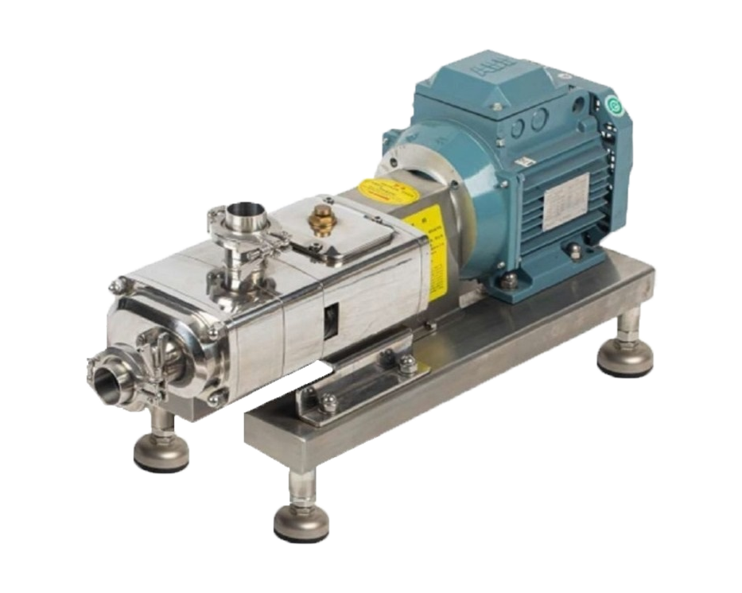
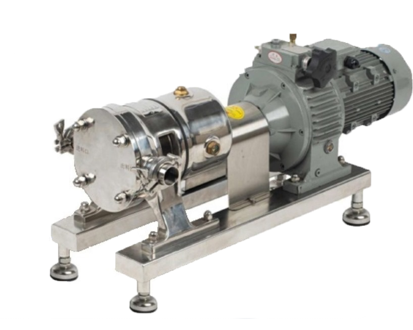
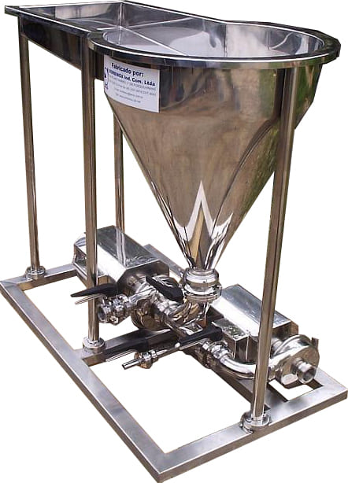

Preço de acessórios de aço inoxidável
Com bom preço para as conexões de inox, a indústria se permite investir e arriscar em outras áreas.
Leia maisBem-vindo à Bombinox
Bombas centrífugas sanitárias em AISI 304 e 316L. Acabamento sanitário nas partes em contato com o produto.
Bombas centrífugas sanitárias são o nosso produto principal. O portfólio é completado por válvulas, conexões, misturadores e projetos especiais desenvolvidos sob a necessidade de cada linha de processo.
Trabalhamos com AISI 304 e 316L conforme a aplicação. As partes em contato com o produto recebem acabamento que favorece a sanitariedade — exigência das indústrias de alimentos, bebidas, cosméticos e farmacêutico que atendemos.
Conheça a fábricaO que nós oferecemos

Essa bomba caracteriza-se por um sistema de bombeamento realizado por rotores que lembram dois parafusos.
Saiba mais
A bomba de lóbulos figura nas aplicações onde exista a necessidade de transferência de fluidos com média e alta viscosidade.
Saiba mais
Os Triblenders são misturadores de líquidos e pós, compostos de uma ou duas bombas e um funil, conforme a aplicação.
Saiba maisExpandindo fronteiras com qualidade e tecnologia
A Bombinox, localizada na região metropolitana da grande Florianópolis, exporta seus produtos de alta tecnologia em bombas centrífugas sanitárias em aço inoxidável para todo o mundo há mais de 20 anos. Com soluções para diversos segmentos, desde alimentos até produtos químicos, a empresa busca atender as necessidades de seus clientes, oferecendo também projetos especiais, válvulas e conexões.
Destaques
Com bom preço para as conexões de inox, a indústria se permite investir e arriscar em outras áreas.
Leia maisA empresa de bombas autoescorvantes ideal para indústrias brasileiras e internacionais é a Bombinox.
Leia maisUma empresa de bomba centrífuga especializada conta com um catálogo de bombas com diferentes configurações.
Leia mais